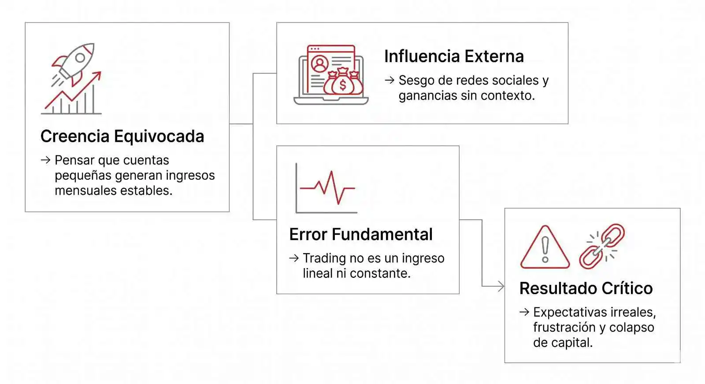

E l trading se ha convertido en una de las búsquedas más populares en internet cuando se habla de dinero e independencia financiera. La promesa de vivir del trading, trabajar desde cualquier lugar y no depender de un horario fijo atrae cada año a millones de personas.
Pero detrás de esa idea existe una realidad que no se ve a simple vista: la mayoría de traders no consigue convertir el trading en una fuente de ingresos estable.
La expansión de las plataformas de trading online y la digitalización del sector financiero han reducido las barreras de entrada. Hoy es posible abrir una cuenta en minutos y empezar con poco capital, incluso sin experiencia previa.
Esto ha creado una expectativa muy común, pero también una de las más importantes del sector: ¿realmente se puede vivir del trading?
- 1. Cómo la confusión entre rentabilidad y estabilidad afecta a los traders
- 2. ¿Cuánto dinero necesitas para vivir del trading?
- 3. Cuánto dinero necesitas para vivir del trading realmente
- 4. Cómo el riesgo en trading puede destruir una cuenta rentable
- 5. Por qué la mayoría no logra vivir del trading
- 6. Estrategias reales para hacer crecer el capital
- 7. ¿Se puede vivir del trading?
- 8. La verdad final del trading
La realidad financiera del trading: cuánto capital se necesita para generar ingresos de forma sostenible
Un análisis sobre expectativas, rentabilidad y el capital necesario para intentar vivir del trading en los mercados financieros actuales.
Este artículo responde esa pregunta desde una perspectiva matemática, financiera y realista, alejándose de las promesas comunes del entorno digital.
Cómo la confusión entre rentabilidad y estabilidad afecta a los traders
La falta de información en el trading no ha sido un impedimento para que muchos puedan iniciar, pero la mala interpretación de muchos traders sobre cómo funciona realmente el dinero en los mercados ha distorsionado la forma en la que quienes inician se proyectan grandes ganancias.
Existe una creencia muy común de que es posible convertir una cuenta pequeña en un ingreso mensual estable en poco tiempo. Esta idea suele reforzarse con ejemplos aislados de grandes ganancias que circulan en redes o comunidades, pero que rara vez incluyen el contexto completo sobre el riesgo o la inconsistencia de esos resultados.
Por lo tanto, la desorientación inicia al confundir rentabilidad con estabilidad. El trading no genera ingresos lineales, sino resultados variables que dependen de las condiciones del mercado, la estrategia utilizada y la gestión del riesgo.
Una mala interpretación lleva a expectativas irreales de ingresos, que no están alineadas ni con el capital disponible ni con la realidad estadística del trading profesional ni con los años que puede llevar operar en el mercado.

¿Cuánto dinero necesitas para vivir del trading?
La rentabilidad realista en el trading profesional
En el trading profesional, la rentabilidad consistente no debe basarse en las ganancias rápidas, sino en la capacidad de mantener resultados estables a largo plazo, que son los que darán la estabilidad económica necesaria.
Un trader con experiencia puede aspirar a retornos promedio de entre 2% y 10% mensual, dependiendo de factores como la estrategia utilizada, la gestión del riesgo y las condiciones del mercado.
Aún así, estos porcentajes no son fijos ni garantizados bajo ningún estudio especializado. Existen meses positivos y negativos, y el rendimiento puede variar significativamente incluso entre traders experimentados.
Por lo que el objetivo principal de todo trader no debería ser obtener ganancias extraordinarias de vez en cuando, sino lograr promediar una consistencia en los resultados y preservar el capital a lo largo del tiempo.
$10
Rentabilidad: 5% mensual
Ganancia: $0.50
No es escalable
$50
Rentabilidad: 5% mensual
Ganancia: $2.50
Aún insuficiente
$100
Rentabilidad: 5% mensual
Ganancia: $5
Nivel aprendizaje
$250
Rentabilidad: 5% mensual
Ganancia: $12.50
Ingreso simbólico
$500
Rentabilidad: 5% mensual
Ganancia: $25
No sostenible
$1000
Rentabilidad: 5% mensual
Ganancia: $50
Base inicial baja
Cuánto dinero necesitas para vivir del trading realmente
La pregunta “cuánto dinero necesito para vivir del trading” solo tiene sentido cuando se traduce en ingresos reales y sostenibles.
Tomando como referencia una rentabilidad promedio del 5% mensual, el capital disponible cambia completamente el panorama a medida que aumentan las inversiones:
Los siguientes valores son estimaciones basadas en una rentabilidad promedio teórica. No están garantizados bajo ningún estudio o condición de mercado constante.
Con 1.000 USD, el ingreso estimado sería de aproximadamente 50 USD mensuales.
Con 10.000 USD, el ingreso mensual rondaría los 500 USD.
Con 50.000 USD, el retorno estimado sería cercano a 2.500 USD mensuales.
Estos ejemplos reflejan una realidad matemática simple: los ingresos dependen directamente del capital disponible y del porcentaje de capital de riesgo que estés dispuesto a invertir, no únicamente de la habilidad del trader.
Para alcanzar ingresos comparables a un salario promedio, normalmente se requiere un capital mucho mayor del que la mayoría de personas posee al comenzar.
Cómo el riesgo en trading puede destruir una cuenta rentable
Si planeas vivir del trading, es fundamental entender que el éxito no depende únicamente de las ganancias en una operación, sino de la capacidad de conservar y hacer crecer el capital a lo largo del tiempo.
El uso excesivo del riesgo por operación es una de las principales razones por las que muchos traders minoristas terminan perdiendo sus cuentas.
¿Qué ocurre cuando el riesgo es demasiado alto?
-
•
Las pérdidas se amplifican rápidamente.
-
•
Las rachas negativas normales pueden destruir una cuenta rentable.
-
•
La presión emocional aumenta y afecta la toma de decisiones.
Incluso una estrategia con ventaja estadística puede colapsar si el riesgo utilizado supera niveles razonables.
Por esta razón, la gestión del riesgo se convierte en el verdadero núcleo de la sostenibilidad en el trading, por encima de cualquier rentabilidad puntual.
Por qué la mayoría no logra vivir del trading: errores que destruyen el capital
Existen varios factores estructurales que impiden que la mayoría de traders convierta esta actividad en una fuente de ingresos consistente, y que vale la pena tener en cuenta.
Los obstáculos más comunes suelen ser:
-
•
Capital insuficiente para generar ingresos sostenibles.
-
•
Expectativas irreales sobre ganancias rápidas y constantes.
-
•
Falta de consistencia en la ejecución de estrategias.
-
•
Dificultad para mantener la disciplina emocional bajo presión.
Incluso después de periodos iniciales de éxito, muchos traders terminan perdiendo consistencia debido a errores de gestión, exceso de riesgo o falta de control emocional.
Por esta razón, vivir del trading requiere mucho más que encontrar operaciones rentables: exige estabilidad psicológica, disciplina y una estructura financiera sólida.
Estrategias reales para hacer crecer el capital en trading de forma progresiva
Por qué el trading no genera ingresos inmediatos sino crecimiento progresivo del capital
El trading es más eficiente cuando se inplementa como una herramienta de crecimiento de capital a largo plazo, y no como una fuente inmediata de ingresos tipo salario.
Por qué el crecimiento del capital en trading depende de reinvertir y no de retirar ganancias
El crecimiento sostenible en trading depende de la reinversión de ganancias y del aumento gradual del capital, no de expectativas fijas mensuales ni de un hábito de ganar y gastar.
Cómo la percepción del mercado puede distorsionar las decisiones en trading
Las decisiones basadas en promedios históricos y comportamiento real del mercado tienden a ser más estables que aquellas basadas en resultados aislados o expectativas externas.
¿Se puede vivir del trading? La respuesta real basada en capital, riesgo y expectativas
La respuesta a la pregunta inicial no es un sí o no absoluto.
Sin embargo, vivir del trading es posible en términos matemáticos, pero no en las condiciones en las que la mayoría de personas lo intenta.
El factor decisivo no es únicamente la capacidad técnica, sino la combinación de capital suficiente, una gestión de riesgo adecuada y expectativas alineadas con la realidad del mercado.
Sin estos elementos, el trading no se comporta como una fuente de ingresos estable, sino como un proceso de acumulación con alta variabilidad.
La verdad final sobre el trading: lo que realmente determina si es sostenible o no
El trading no es un sistema de ingresos rápidos ni una fórmula de ganancias constantes. Su funcionamiento está determinado por el capital, la gestión del riesgo y la naturaleza impredecible del mercado.
La diferencia entre una expectativa incorrecta y un enfoque sostenible radica en comprender que el rendimiento porcentual solo tiene valor cuando se traduce en cifras reales y sostenibles.
En términos prácticos, la pregunta no es solo si se puede vivir del trading, sino si las condiciones financieras personales permiten sostenerlo sin comprometer el capital.
El trading no es una fuente de ingresos, sino un proceso de gestión de capital.
Artículos relacionados:
¿Quieres leer artículos similares? Selecciona uno y haz clic en "Ir"